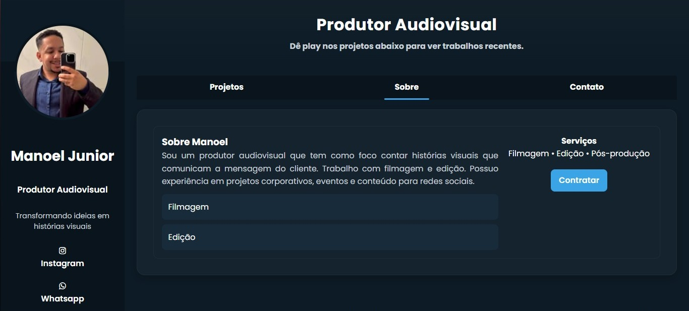
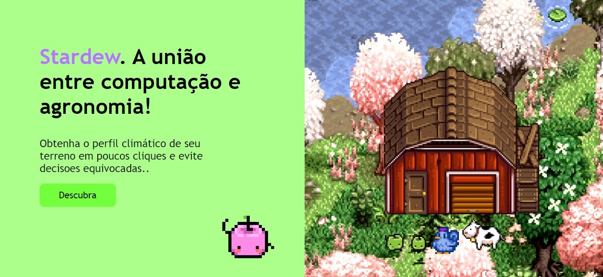
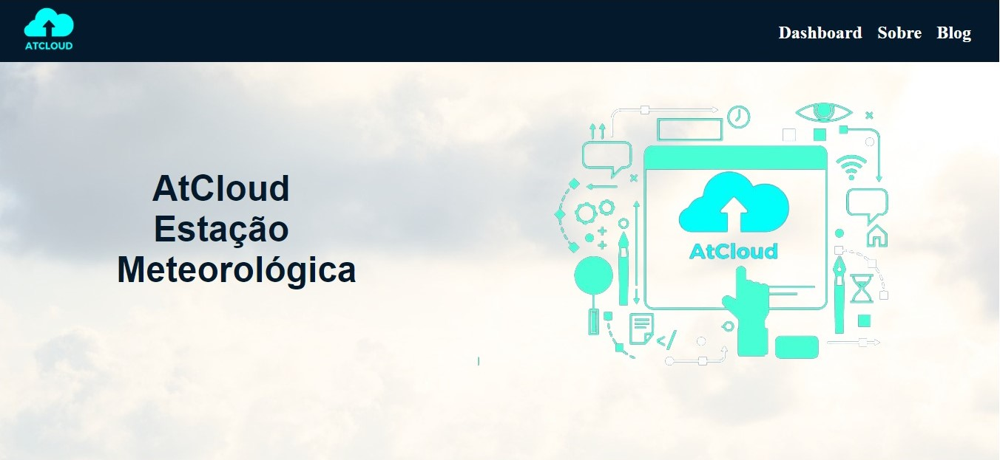

Ajudo empresas a entrarem na internet com sites profissionais e também desenvolvo sistemas e integrações para melhorar processos.
Quero um site / sistema Baixar currículoSou desenvolvedor web focado na criação de sites, sistemas e soluções digitais que realmente geram resultado. Atuo tanto no front-end quanto no back-end, desenvolvendo projetos completos, do visual à lógica.
Tenho experiência com criação de landing pages, lojas virtuais e sistemas personalizados, além de integração com APIs e automação de processos. Busco sempre entregar soluções rápidas, organizadas e fáceis de usar.
Atualmente estou aberto a freelas e oportunidades CLT/PJ, buscando evoluir constantemente e participar de projetos que gerem impacto real.
Sites modernos para empresas e profissionais que querem presença online com qualidade.
Desenvolvimento de sistemas personalizados para gestão e controle.
Conexão entre plataformas e APIs para automatizar tarefas.
Landing page desenvolvida para venda de suplementos, focada em conversão, com destaque para ofertas, gatilhos visuais e navegação direta para compra.
Ver projeto →
Desenvolvimento de site profissional para apresentação de serviços, com foco em clareza das informações, contato rápido e presença digital.
Ver projeto →
Sistema desenvolvido para coleta, processamento e visualização de dados meteorológicos em tempo real. Sistema meteorológico com armazenamento em MongoDB e backend estruturado para manipulação e análise de dados.
Ver projeto →
Sistema desenvolvido para coleta, processamento e visualização de dados meteorológicos em tempo real, utilizando integração com Firebase e exibição dinâmica em gráficos.
Ver projeto →Aberto para freelas e oportunidades CLT/PJ